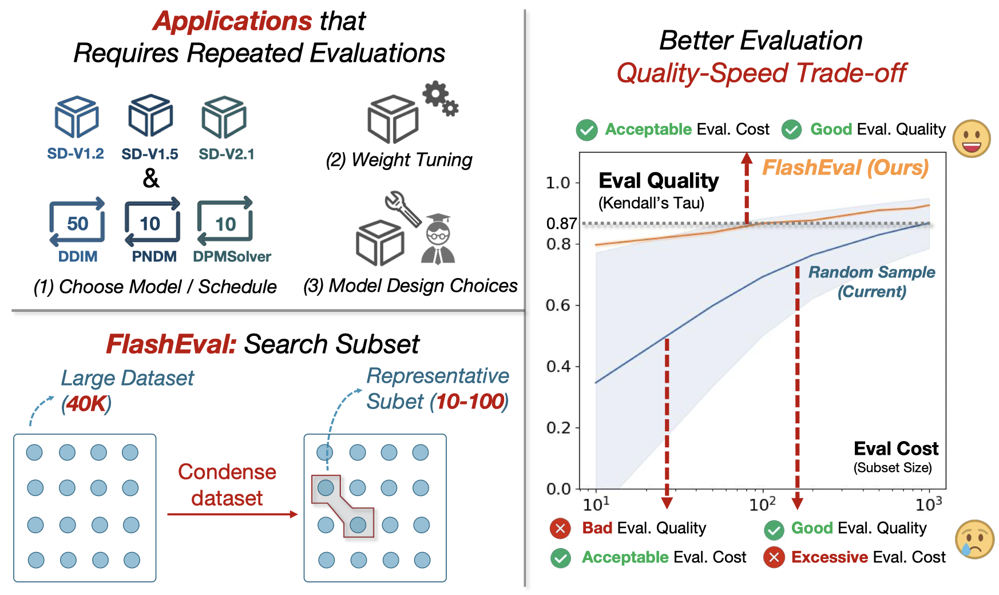

|
Lin Zhao I am an incoming PHD student at Department of Electrical & Computer Engineering, Northeastern University. My research interests include deep learning algorithm, multi-modal AI and generative model. I got my M.S. and B.S. degrees from Nankai University, in 2023 and 2020, advised by Prof. Zhenglu Yang. |

|
Publications |
|  |
FlashEval: Towards Fast and Accurate Evaluation of Text-to-image Diffusion Generative Models
Lin Zhao*, Tianchen Zhao*, Zinan Lin, Xuefei Ning, Guohao Dai, Huazhong Yang, Yu Wang Computer Vision and Pattern Recognition (CVPR), 2024 We propose FlashEval, which can identify a representative subset to speed up the evaluation of text-to-image Diffusion models (10x). |

|
THInImg: Cross-modal Steganography for Presenting Talking Heads in Images
Lin Zhao, Hongxuan Li, Xuefei Ning, Xinru Jiang Winter Conference on Applications of Computer Vision (WACV), 2024 We propose THInImg, which can present up to 80 seconds of high quality talking-head video (including audio) in an identity image with 160×160 resolution. |
|
Deep Symmetric Network for Underexposed Image Enhancement with Recurrent Attentional Learning
Lin Zhao*, Shaoping Lu*, Tao Chen, Zhenglu Yang, Ariel Shamir International Conference on Computer Vision (ICCV), 2021 We propose an invertible framework to solve both underexposed image enhancement and low-light image enhancement problems in a unified structure. [project] |
Work Experiences |
|
Research Assistant, NICS-EFC group, Tsinghua University Jul 2023 - Dec 2023, Beijing, ChinaWorked on Machine Learning Algorithm Professor: Prof. Yu Wang and Prof. Xuefei Ning |
|
|
Research Intern, Media Computing Group, Microsoft Research Asia Jul 2022 - Dec 2022, Beijing, ChinaWorked on Talking-head Generation and Video Compression |
|
|
Research Intern, Multimodal Group, Sensetime Mar 2022 - May 2022, Beijing, ChinaWorked on Video Editing |
Selected Honors & AwardsGongneng Scholarship. 2021 Graduate Student Scholarship. 2020 Comprehensive First-class Scholarship (Top 5%). 2018, 2019 Honorable Mention, Mathematical Contest in Modeling. 2019 |
MiscI was born and raised in Harbin, China. I enjoy running, cooking and singing. I especially love little monkeys; they are just too adorable! |
|
|